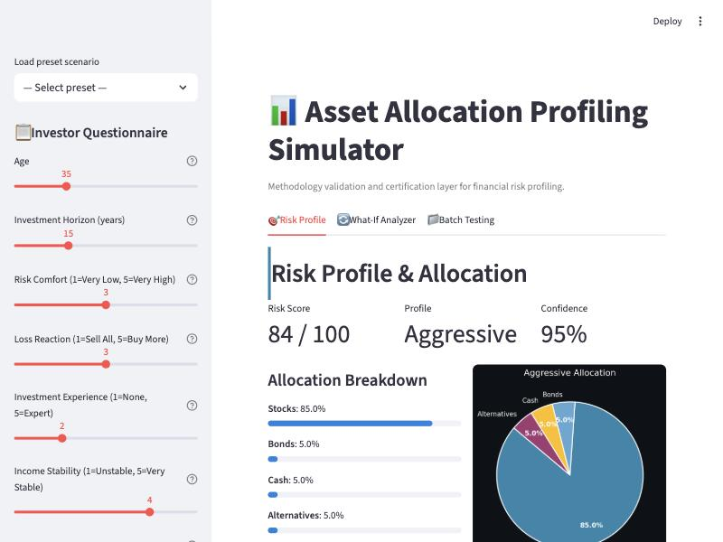
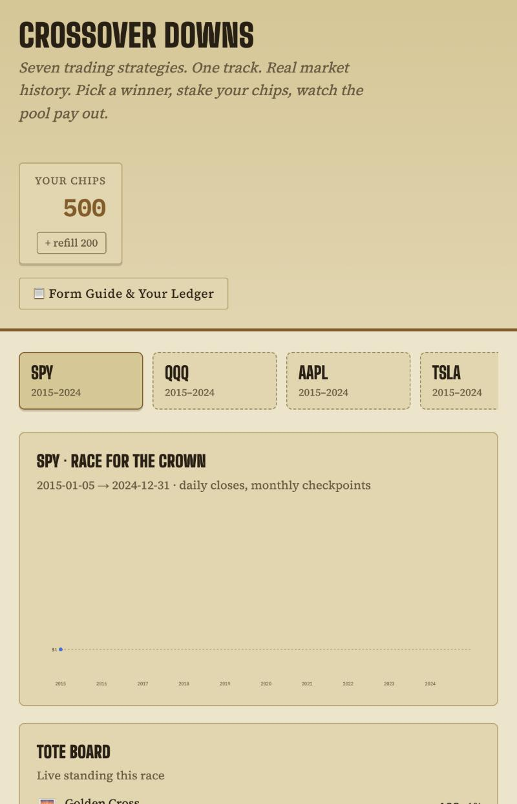

Sr. Finance Associate at Fidelity Investments, working where investment data, research insight, and applied AI meet. I came from reinforcement learning research, and now I spend most of my time translating dense data into narratives PMs and analysts actually use.
"I went into finance to work on the decisions that actually shape people's lives."
How they save, invest, and plan for the future they want. What keeps me there is that I'm genuinely obsessed with problems. It's the same itch that had me decoding neural signals to control a robot arm in grad school, and building emergency-brake electronics for a Hyperloop pod. Different domains, same compulsion to take a system apart and rebuild it cleaner. Today that shows up as a couple of years managing data analytics & insights for a portfolio platform (equity holdings, FactSet workflows, dashboards for PMs and analysts), and now as a Sr. Finance Associate applying that same lens to investment decisions directly.
I'm strengthening the finance side of that equation through CFA Foundations and AI-in-finance coursework. Off the clock, it's prompting techniques for LLMs, hiking, and shipping small personal web apps. A few of them are below.
Platform data strategy and operations: equity holdings, FactSet workflows, and portfolio dashboards for PMs and analysts.
Built reporting infrastructure on Tableau and SQL across 15+ data sources; a cohort-analysis rebuild for Finance improved monthly retention 18% and cut churn 12 bps.
Used neural activity to drive human-like pickup-and-reach tasks on a Universal Robot; simulated RNN/LSTM control policies across UR, Rethink, Fetch, and WAM platforms.
Independent builds spanning investment tooling, applied AI, and native apps. Same habit as the About section: take it apart, rebuild it cleaner.

A risk-profiling tool that goes past a number: a 14-check certification engine modeled on real IPS constraints and MiFID II / SEC suitability rules, with confidence-scored triage (auto-approve / advisor review / human intervention) and a what-if analyzer for stress-testing recommendations before they ship. 34/34 tests passing.
View on GitHub →
Seven rule-based trading agents race head-to-head on 10 years of real SPY / QQQ / AAPL / TSLA / GLD / BTC price history, with a pari-mutuel chip-staking mechanic. The backtests are real: Buy & Hold beats moving-average crossovers in 5 of 6 tickers, and the game's own "Form Guide" tells you so before you bet.
Demo available on requestA native iOS expense tracker: type an expense in plain English, hit enter, done. Regex-based parsing, per-account budget pacing with alarm thresholds, and an on-device LLM (Apple FoundationModels) that cleans up notes and infers a spending category. No backend. Nothing leaves the phone.
Native app · not yet on the App StoreTested six candidate stock-ranking formulas against 20+ years of Numerai's real target data before touching an upload button. Fading extreme RSI (mean-reversion) held up in-sample and out-of-sample (Sharpe 1.38 / 1.16); pure momentum was consistently negative. Caveats documented too, since a well-known factor like this is unlikely to be orthogonal alpha.
Research complete · not yet stakedA personal webapp extension giving personalized styling tips based on user preferences, leveraging custom prompts and AI generation to streamline the shopping experience.
Private · in progressLead strategist for a financial modeling initiative focused on optimizing data pipelines and architectural integrity for high-volume investment datasets.
An ongoing analysis of geospatial data contributions as a Level 6 Local Guide, visualizing impact and community engagement trends.
Happy to talk investment data, applied AI, or anything I've built above.